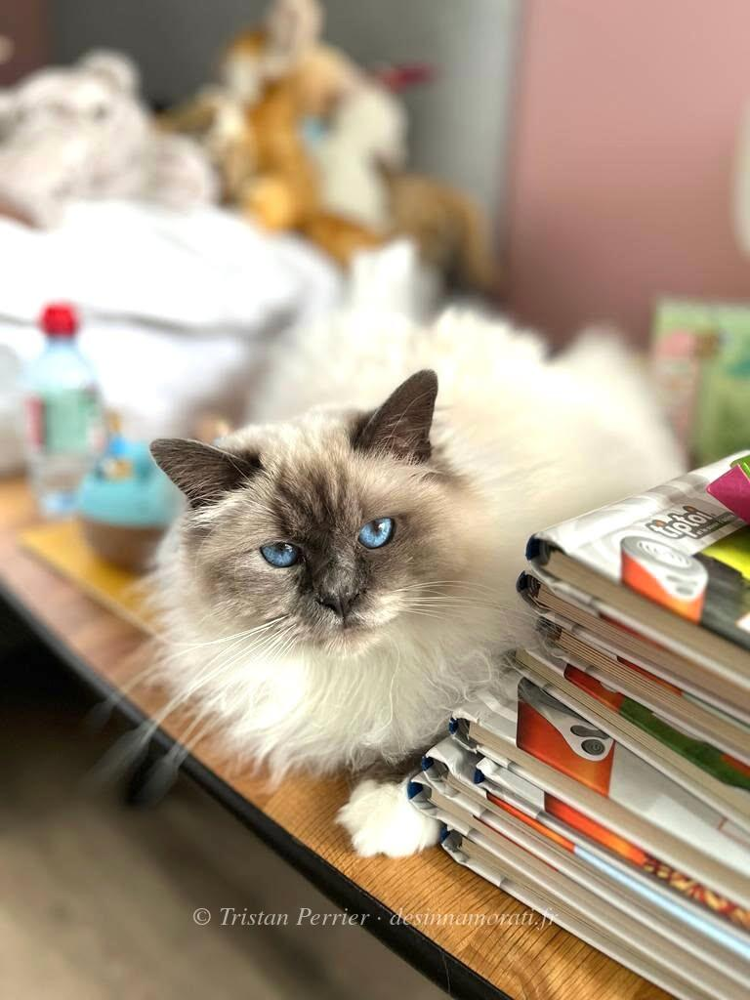

RobeMâle · Blue point
StatutAdopté
Album8 photos, de mai 2022 à janvier 2025
Demi-frères et sœurspar sa mère : 2020 avec Origan de Shweli-Sittang, 2021 avec Crowned Dream Quinten
par son père : 2021 avec Quintessence, 2021 avec Rey, 2023 avec Simone de Beauvoir
par son père : 2021 avec Quintessence, 2021 avec Rey, 2023 avec Simone de Beauvoir


Photos réduites et marquées. Elles appartiennent à la Chatterie des Innamorati et ne peuvent pas être reprises dans une annonce.